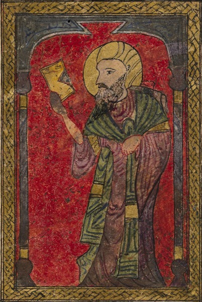
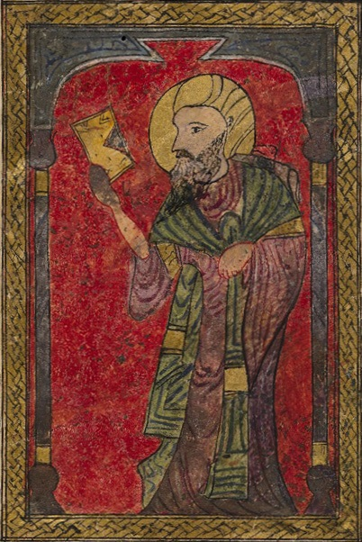

Visita il nostro sito web principale
Questo sito è solo una vetrina e ti invitiamo a visitare il sito https://dioscorides.org/ dove potrai trovare tutte le informazioni sulla medicina tradizionale e sulle erbe medicinali, alcune delle quali sono state scoperte da Dioscoride e vengono utilizzate ancora oggi.
La nostra missione è quella di promuovere l'uso di prodotti naturali efficaci nel preservare e migliorare la salute e il benessere, nonché nel combattere l'invecchiamento e le condizioni di salute. Il nostro obiettivo è informare sugli antichi rimedi naturali a base di erbe, rivisti da una prospettiva moderna alla luce delle nuove scoperte in campo farmacologico, in particolare per quanto riguarda le scoperte sui meccanismi molecolari d'azione dei principi attivi contenuti nelle piante.
Pedanio Dioscoride era un greco vissuto tra il 40 e il 90 d.C.. Fu chirurgo e medico militare dell'imperatore Nerone. Scrisse il libro De Materia Medica, in cinque volumi, in cui descrisse più di 600 piante. Il libro costituì la farmacopea del mondo occidentale e rimase il testo medico per eccellenza fino al XVII secolo.
La coerenza tra le farmacopee successive e il De Materia Medica è notevole, a dimostrazione del fatto che l'opera di Dioscoride ha costituito la base della medicina naturale occidentale per tutto il periodo romano e medievale e quasi fino al periodo moderno. Le informazioni contenute nel De Materia Medica sono di interesse storico e alcune di esse sono ancora valide oggi, a distanza di oltre 2.000 anni.
Le note sulle piante, riportate nel De Materia Medica, includono i loro habitat, i metodi di preparazione e l'uso medicinale dei principi attivi che contengono. Molti dei nomi comuni e scientifici delle piante ancora in uso derivano da Dioscoride.
Per inciso, vale la pena di notare che Dioscoride fu probabilmente il primo a utilizzare il salice per ridurre la febbre e il dolore. Come dimostrato nel 1825 dal chimico italiano Francesco Fontana, il salice contiene salicina, che fu estratta dalla corteccia nel 1828 dal tedesco Johann Buchner. La salicina è un glicoside da cui è stato isolato l'acido salicilico, successivamente modificato in acido acetilsalicilico, la moderna aspirina.
 
